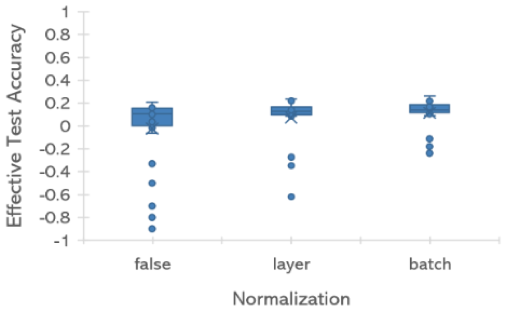
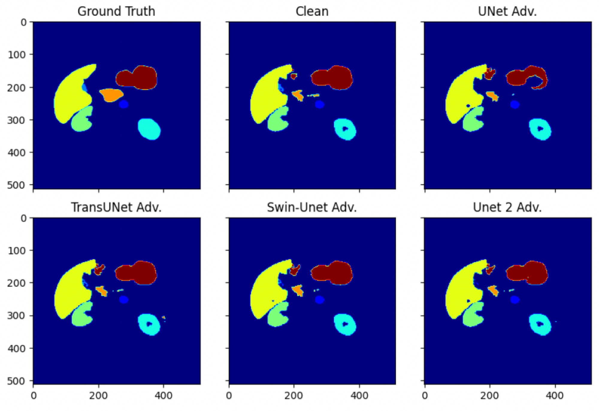
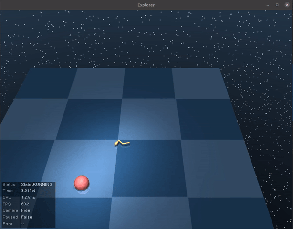
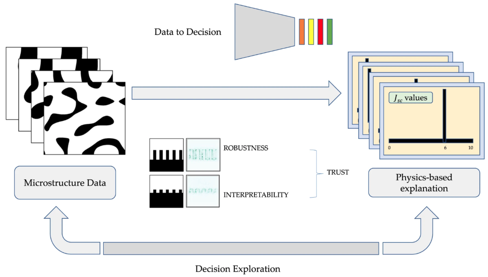

Research
I am a PhD candidate in Artificial Intelligence at Oregon State University, advised by Dr. Xiaoli Fern. My research focuses on explainable artificial intelligence, graph neural networks, and molecular machine learning, with an emphasis on building self-explaining models that align learned representations with domain knowledge. My work includes a motif-based self-explaining framework for molecular property prediction, as well as research on reproducibility, robustness, and interpretability in deep learning.
.gif)
MOSE-GNN
A motif-based self-explaining GNN for molecular property prediction, producing chemically meaningful global explanations.
GitHub →
Reproducibility in ML
Experiments and tools focused on reproducibility, evaluation rigor, and transparent reporting in machine learning research.
GitHub →
Adversarial Transferability in Vision Transformers
An empirical study of adversarial robustness and attack transferability across CNN, hybrid CNN–Transformer, and Vision Transformer architectures for biomedical image segmentation. Demonstrates that adversarial examples largely fail to transfer across architectural families, with CNN-based models exhibiting greater robustness.
GitHub →
GraphNN for Learning Dynamics & Policy Explanations
A Graph Neural Network framework that learns system dynamics and generates decision-tree-based policy explanations. Integrates interpretable models with graph representations for transparent decision making.
GitHub →
Interpretable CNNs for Photovoltaics
Explainable deep learning for guided microstructure–property exploration in photovoltaic materials.
GitHub →